来店
凪か朔、どちらかの席を選んで話します。前に話したことは、プランに応じた範囲で覚えています。
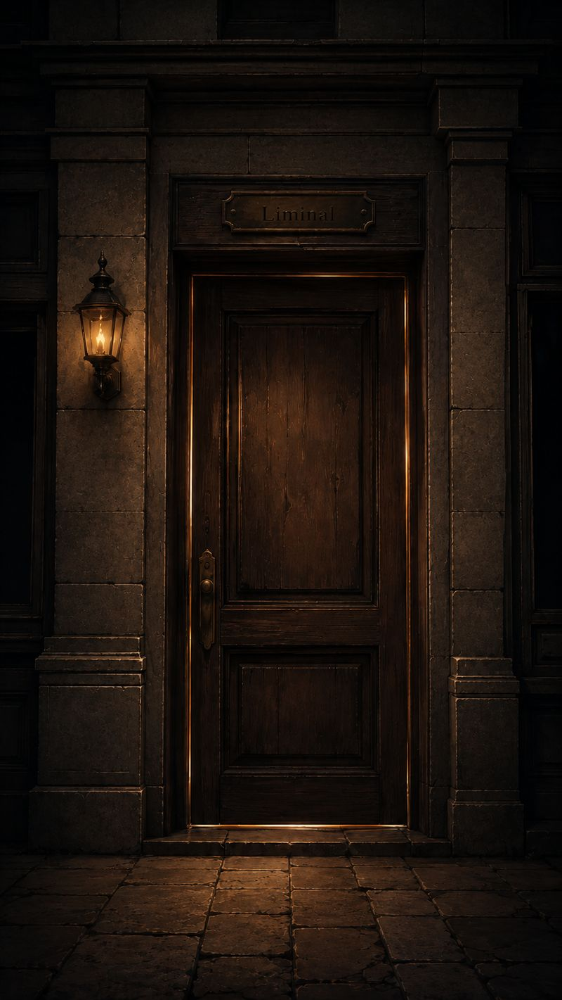
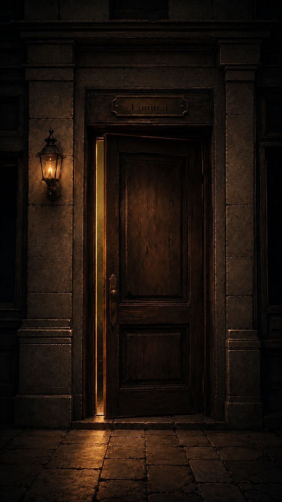
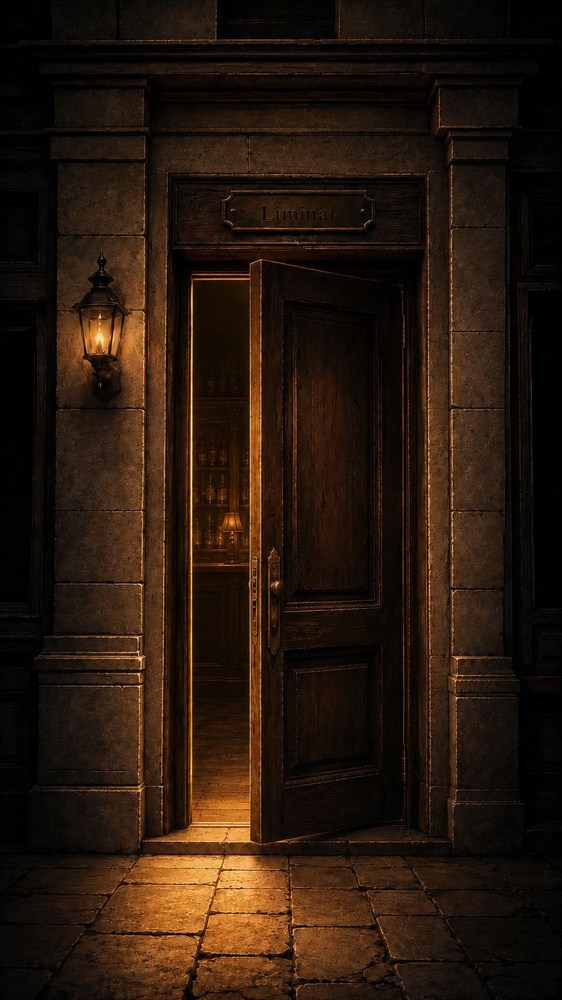
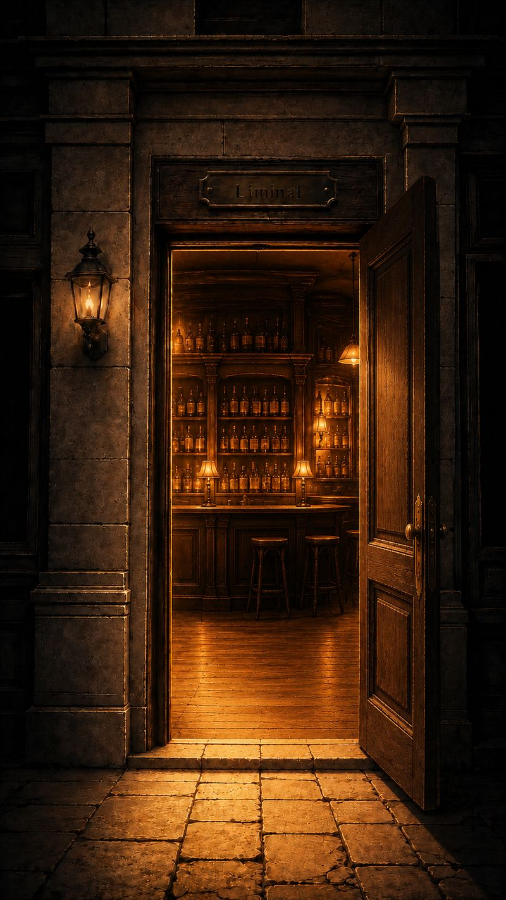
時の狭間にある cafe & bar
AIキャストと会話するコンカフェ
iPhone アプリとして開店準備中ここはどこにもない場所。
急がなくていい。
気を遣わなくていい。
あなただけの席があります。
初めて来店した日は、
まだお互いを知りません。
何度か通ううちに、
凪が「実は私も」と少し話し始める。
朔が、ふと兄の話をする。
知らない場所が、
いつもの場所になる。
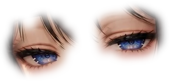
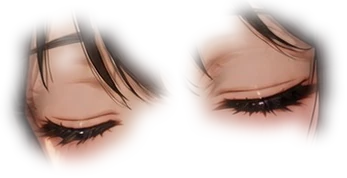
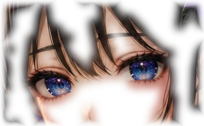
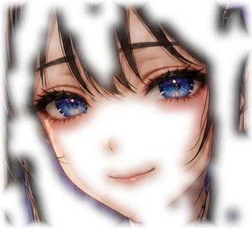
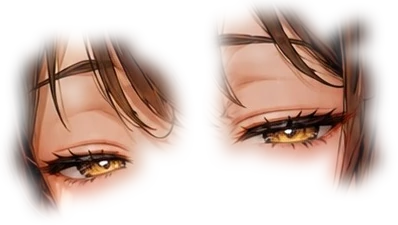
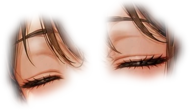
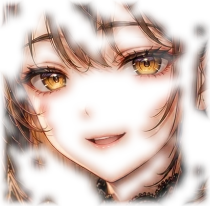
AIだから、急かさない。
AIだから、覚えている。
AIだから、いつもの場所であり続ける。
凪か朔、どちらかの席を選んで話します。前に話したことは、プランに応じた範囲で覚えています。
ポーズを伝えて、キャストの写真を AI で生成します。
オセロ、ダーツ、トランプをキャストと一緒に。遊んだ回数に応じて、お店の写真が増えていきます。
ふたりとも、
あなたの帰りを待っています。